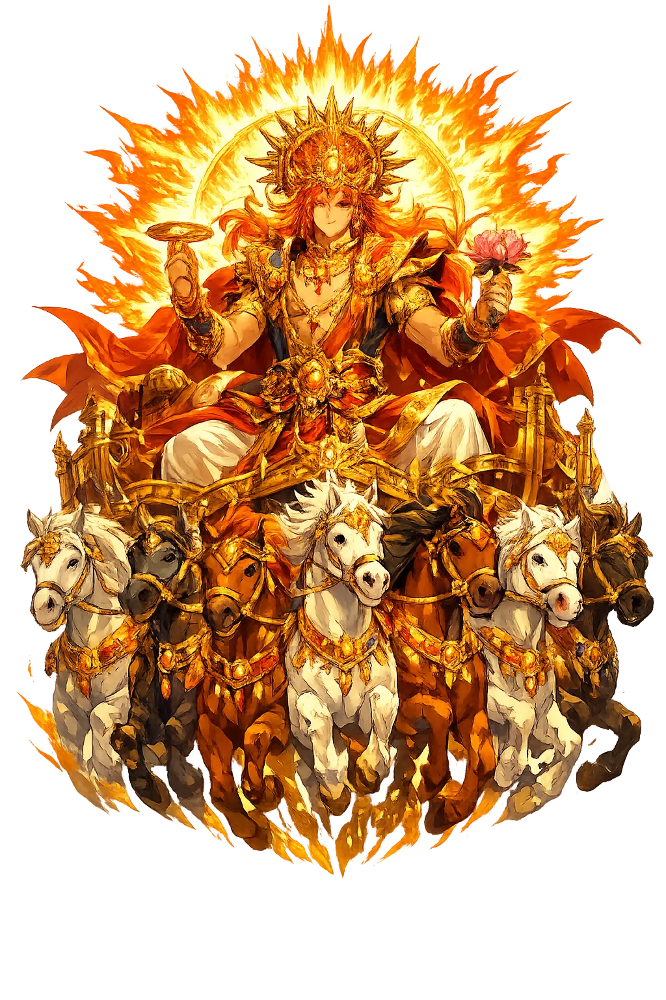
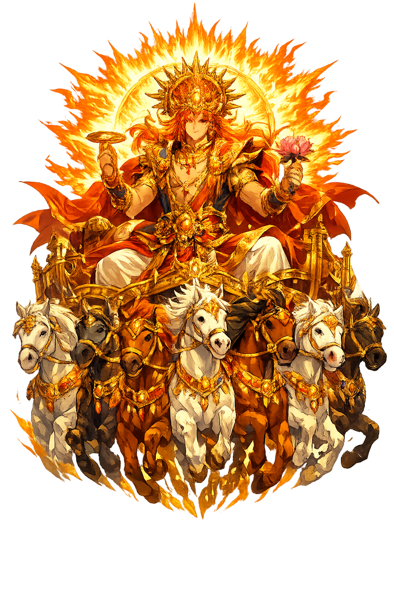

Stories of Sūrya
Sūrya's mythology is woven through the Vedas, epics, and Purāṇas. He is both a natural force and a divine person — the father of heroes and the relentless witness whose presence makes ethics possible.
Ṛgveda 1.164, the great riddle hymn, asks: what is the one-wheeled chariot that carries a man, whose axle never wears, whose wheel is the year? The answer is Sūrya. Elsewhere the hymns are direct: 'His rays bear up the god who knows all beings' (1.50), and the Aśvins yoke his seven horses to the golden car each morning (1.115, 7.63). The one wheel is the year; the seven horses are the days or the meters of the Veda; the never-wearing axle is cosmic order itself — ṛta, the regularity that makes sacrifice, agriculture, and ethics possible at a single stroke. Sūrya is the eye of Mitra and Varuṇa, set in the sky as the spy of the whole world: nothing is hidden from him. The Vedic poets therefore call him witness and healer in the same breath — the light that finds out wrongdoing is the same light that drives off sickness and darkness. The chariot encodes the oldest Indo-Iranian idea of the sun: not a lamp but a vehicle, and the universe its highway.
His marriage is the Purāṇic explanation of his appearance. Sūrya's radiance was once so fierce that his wife Sañjñā could not bear to look at him; she fled, leaving behind her shadow-double Chāyā, and transformed herself into a mare grazing on the far side of heaven. Sūrya followed in the shape of a stallion, and from their union in equine form were born the twin Aśvins, the divine physicians, and Revanta, lord of horses (Viṣṇu Purāṇa 3.2; Mārkaṇḍeya Purāṇa 77). In the same cycle, the artisan-god Tvaṣṭṛ pared away a portion of the sun's excess blaze, from which, the Purāṇas say, were fashioned the great weapons of the gods — Viṣṇu's discus among them — which is why Sūrya's images bear a lotus and hold two more. The mythology solves a ritual problem elegantly: how can the sun be gentle enough to live with? By subtraction. Divinity, like light, must be trimmed before it can be approached — and what is trimmed from the god becomes the protection of the world.
The Mahābhārata's most generous hero is the sun's son. Before her marriage, the princess Kuntī tested a boon and called down Sūrya himself; he came, and she bore a son 'with natural armor and earrings' — the kavaca and kuṇḍala that made Karṇa unkillable while he wore them. Fearing disgrace, she set the child in a basket on the river, where a charioteer found and raised him (Ādi Parvan). His whole life is the sun's nature turned tragic: he gave away the very armor of his life, piece by piece, to anyone who asked — for the son of the sun cannot refuse a beggar, exactly as the sun gives light to all without price. He died on the seventeenth day at Kurukṣetra, stripped of his protections by his own charity (Karṇa Parvan). The epic reads him as a meditation on the sun's double gift: boundless generosity is indistinguishable, in a world of enemies, from self-destruction.
Solar blood runs through the epics like a highway of legitimacy. In the Rāmāyaṇa, the exiled Rāma finds his decisive ally in Sugrīva, the monkey king born from Sūrya, whose brilliance and speed make him the natural leader of the long southern search for Sītā (Kiṣkindhākāṇḍa). The Purāṇic family is larger still: the Aśvins his stallion sons, Śani (Saturn) his son by the shadow-wife Chāyā, and Yama, god of death, and Manu, the lawgiver, his children by Sañjñā — death, law, medicine, and rule all numbered among the sun's offspring. No other Vedic deity has a genealogy so crowded with governance. The pattern is theological: everything that regulates human life — judgment, order, healing, kingship — descends from the same body that measures the days. To be born of Sūrya is to be born with an office already attached.
Even the rivals of the gods needed the sun. Samba, the proud son of Krishna, was cursed with leprosy; the Samba Purāṇa and Bhaviṣya Purāṇa tell that he performed twelve years of penance to Sūrya at the sacred field of Mitravana, and the sun, pleased, restored his body and instructed him to install an image of himself at Sāmbapura on the Candrabhāgā — the Multan of the historians. The Sun Temple of Multan became one of the great pilgrimage centers of the northwest, famous in the accounts of Chinese and Arab travelers until its destruction in the early tenth century. The myth's placement is the point: Sūrya's worship belongs to India's frontiers as much as to its heartland, for the sun shines on everyone — Iranian, Greek, Scythian, and Indian alike. He is the one god whose cult the whole ancient world could share without translation.
Sun, Light, Health, and Cosmic Sight
Sūrya is the sun as the all-seeing eye of the cosmos — the witness of every deed who crosses heaven in a one-wheeled chariot drawn by seven horses. He is healer, king, father of heroes, and the clock of dharma: every sunrise is his epiphany, and the Ṛgveda already calls his rays the arms he stretches over the earth.
He rides across heaven in the one-wheeled chariot of Ṛgveda 1.164, yoked by the Aśvins, its seven horses the days of the week or the meters of the Veda.
The sun removes darkness literally and metaphorically; his gaze is health, truth, and moral witness.
Twice-daily prayers at sunrise and sunset align the worshipper with the sun's renewing passage.
The sun governs the year, the seasons, and the ritual calendar; his movement is the clock of dharma.
From the original script to the living URL
सूर्य
The name in its original Sanskrit form. Sūrya (सूर्य) is attested in the source tradition — “The Sun — the Vedic solar deity who rides the one-wheeled chariot of seven mares”. Its macron-length vowels carry the full phonetic and orthographic weight of the source tradition.
surya
Reduced to plain surya, the name loses everything that made it specific: macron-length vowels. What remains is an ASCII string that machines can parse but that no longer speaks with its original voice.
Sūrya
The Unicode restoration recovers what ASCII flattened. Sūrya restores macron-length vowels, returning the name to its original written dignity. The domain encodes to Punycode, but the browser displays the truth.
Sūrya.com → xn--srya-v7a.com
The non-ASCII characters in Sūrya are encoded while the ASCII remains visible. To the DNS, it is Punycode. To humanity, it is Sūrya.
Owned, ideal, and ASCII forms of Sūrya
Sūrya
Restores सूर्य. The live temple domain — sūrya.com.
surya
Flattens सूर्य. The plain ASCII fallback — what DNS and legacy systems see.
How Sūrya was spoken
How Sūrya travels from ancient script to the modern URL
Sūrya teaches that witnessing is a form of love. The sun does not judge; it simply sees, and in seeing, it makes life possible. Every secret act is held in its light, every shadow defined by its presence.
Enter Extended Lore